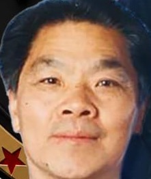

William Cheung studied under Ip Man and founded the Global Traditional Wing Chun Kung Fu Federation. Sifu Prasanna Jayaweera learned from Cheung before passing on the system to students in Sri Lanka. William Cheung’s son Andrew is listed as federation president.
Associated pillars
Relationships
- studied under Ip Man Global Traditional Wing Chun Kung Fu Federation, William Cheung’s account
- parent of Master Andrew Cheung Global Traditional Wing Chun Kung Fu Federation, Andrew Cheung profile
- taught Sifu Prasanna Jayaweera Prasanna Jayaweera’s academy history, republished by Pera Wushu